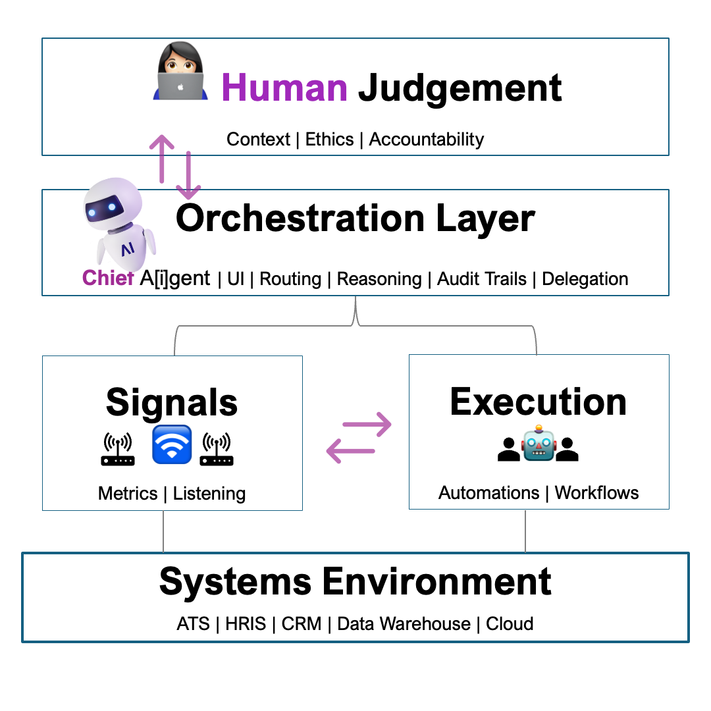

We don’t need more AI vendors.
The future belongs to those building AI internally in the weeds of everyday workflows.
👋 Diane Wilkinson — AI-Native People Ops & Talent Analytics
People Systems · Talent Intelligence · Human-in-the-loop AI · ATS SME · MBA, Data Analytics (4.0 GPA) · Credentials & Recommendations
I see the system underneath the work — not just individual tools or metrics, but how decisions are made, where signals are lost, and how data, systems, and humans actually interact.
I build workflow-first tools for People Ops and Talent teams, then connect them through shared logic so signals turn into action in seconds — not just labeled “actionable” on dashboards.
AI runs quietly in the background, embedded in the platforms teams already use, so adoption doesn’t mean ripping everything out.
📄 Read my article: Why 95% of AI Pilots Fail & What the Successful 5% Do Differently
Tools I Built
Working tools embedded in real People Ops environments. Each tool is designed for human-in-the-loop operation and measurable outcomes.
The System Underneath
Tools are the interface. The system is the operating model: shared signals, decision logic, guardrails, and escalation paths.
›
The System Underneath
Tools are the interface. The system is the operating model: shared signals, decision logic, guardrails, and escalation paths.

- AI is infrastructure — embedded inside the platforms teams already use.
- Humans remain accountable — escalation paths and auditability are built in.
- Governance is continuous — signals and workflows co-evolve with the business.
- The system is operable, not fragile — designed to run in real constraints.
How I Keep Us Safe
Guardrails on AI autonomy: what can safely auto-execute, what requires approval, and what must always escalate — with auditability built in.
Let’s Connect
Open to roles in People Analytics, Talent Intelligence, People Ops, and Recruiting Operations — especially teams building internal AI capabilities.